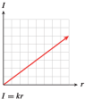
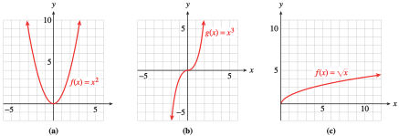
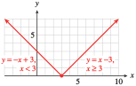
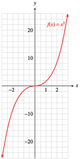
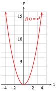
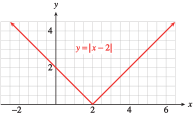
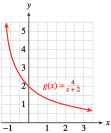

In this section, we study the graphs of some important basic functions. Many functions fall into families or classes of similar functions, and recognizing the appropriate family for a given situation is an important part of modeling.
We begin by reviewing the absolute value.
SubsectionAbsolute Value
The absolute value is used to discuss problems involving distance. For example, consider the number line shown below. Starting at the origin, we travel in opposite directions to reach the two numbers \(6\) and \(-6\text{,}\) but the distance we travel in each case is the same.
The distance from a number \(c\) to the origin is called the absolute value of \(c\text{,}\) denoted by \(\abs{c}\text{.}\) Because distance is never negative, the absolute value of a number is always positive (or zero). Thus, \(\abs{6}= 6\) and \(\abs{-6} = 6\text{.}\) In general, we define the absolute value of a number \(x\) as follows.
This definition says that the absolute value of a positive number (or zero) is the same as the number. To find the absolute value of a negative number, we take the opposite of the number, which results in a positive number. For instance,
\(x\) must be zero or negative if \(\left| x \right| =-x \text{.}\)
Absolute value bars act like grouping devices in the order of operations: You should complete any operations that appear inside absolute value bars before you compute the absolute value.
Many situations can be modeled by a handful of simple functions. The following examples represent applications of eight useful functions.
The contractor for a new hotel is estimating the cost of the marble tile for a circular lobby. The cost is a function of the square of the diameter of the lobby.
The number of board-feet that can be cut from a Ponderosa pine is a function of the cube of the circumference of the tree at a standard height.
The manager of an appliance store must decide how many coffee-makers to order every quarter. The optimal order size is a function of the square root of the annual demand for coffeemakers.
Investors are deciding whether to support a windmill farm. The wind speed needed to generate a given amount of power is a function of the cube root of the power.
The frequency of the note produced by a violin string is a function of the reciprocal of the length of the string.
The loudness, or intensity, of the music at a concert is a function of the reciprocal of the square of your distance from the speakers.
The annual return on an investment is a linear function of the interest rate.
You are flying from Los Angeles to New York. Your distance from the Mississippi River is an absolute value function of time.

We will consider each of these functions and their applications in more detail in later sections. For now, you should become familiar with the properties of each graph and be able to sketch them easily from memory.
Investigation2.3.Eight Basic Functions.
Part I Some Powers
Complete the table of values for the squaring function, \(f(x) = x^2\text{,}\) and the cubing function, \(g(x) = x^3\text{.}\) Then sketch each function on graph paper, using the table values to help you scale the axes.
Verify both graphs with your graphing calculator.
State the intervals on which each graph is increasing.
Write a few sentences comparing the two graphs. The graph of \(y = x^2\) is called a parabola, and the graph of \(y = x^3\) is called a cubic.
\(x\)
\(f(x)=x^2\)
\(g(x)=x^3\)
\(-3\)
\(\)
\(\)
\(-2\)
\(\)
\(\)
\(-1\)
\(\)
\(\)
\(-\frac{1}{2}\)
\(\)
\(\)
\(0\)
\(\)
\(\)
\(\frac{1}{2}\)
\(\)
\(\)
\(1\)
\(\)
\(\)
\(2\)
\(\)
\(\)
\(3\)
\(\)
\(\)
Part II Some Roots
Complete the tables for the square root function, \(f(x) = \sqrt{x}\text{,}\) and the cube root function, \(g(x) = \sqrt[3]{x} \text{.}\) (Round your answers to two decimal places.) Then sketch each function on graph paper, using the table values to help you scale the axes.
Verify both graphs with your graphing calculator.
State the intervals on which each graph is increasing.
Write a few sentences comparing the two graphs.
\(x\)
\(f(x)=\sqrt{x}\)
\(0\)
\(\)
\(\frac{1}{2}\)
\(\)
\(1\)
\(\)
\(2\)
\(\)
\(3\)
\(\)
\(4\)
\(\)
\(5\)
\(\)
\(7\)
\(\)
\(9\)
\(\)
\(x\)
\(g(x)=\sqrt[3]{x}\)
\(-8\)
\(\)
\(-4\)
\(\)
\(-1\)
\(\)
\(-\frac{1}{2}\)
\(\)
\(0\)
\(\)
\(\frac{1}{2}\)
\(\)
\(1\)
\(\)
\(4\)
\(\)
\(8\)
\(\)
Part III Asymptotes
Complete the table for the functions
\begin{equation*}
f(x)=\dfrac{1}{x} ~\text{ and } ~ g(x)=\dfrac{1}{x^2}
\end{equation*}
What is true about \(f(0)\) and \(g(0)\text{?}\)
Prepare a grid on graph paper, scaling both axes from \(-5\) to \(5\text{.}\) Plot the points from the table and connect them with smooth curves.
As \(x\) increases through larger and larger values, what happens to the values of \(f (x)\text{?}\) Extend your graph to reflect your answer.
What happens to \(f (x)\) as \(x\) decreases through larger and larger negative values (that is, for \(x = -5,-6,-7, \ldots \))? Extend your graph for these \(x\)-values.
\(x\)
\(f(x)=\dfrac{1}{x}\)
\(g(x)=\dfrac{1}{x^2}\)
\(-4\)
\(\)
\(\)
\(-3\)
\(\)
\(\)
\(-2\)
\(\)
\(\)
\(-1\)
\(\)
\(\)
\(-\frac{1}{2}\)
\(\)
\(\)
\(0\)
\(\)
\(\)
\(\frac{1}{2}\)
\(\)
\(\)
\(1\)
\(\)
\(\)
\(2\)
\(\)
\(\)
\(3\)
\(\)
\(\)
\(4\)
\(\)
\(\)
As the values of \(x\) get larger in absolute value, the graph approaches the \(x\)-axis. However, because \(\dfrac{1}{x}\) never equals zero for any \(x\)-value, the graph never actually touches the \(x\)-axis. We say that the \(x\)-axis is a horizontal asymptote for the graph.
Repeat step (3) for the graph of \(g(x)\text{.}\)
Next we’ll examine the graphs of \(f\) and \(g\) near \(x = 0\text{.}\)
Use your calculator to evaluate \(f\) for several \(x\)-values close to zero and record the results in the tables below.
\(x\)
\(f(x)=\dfrac{1}{x}\)
\(g(x)=\dfrac{1}{x^2}\)
\(-2\)
\(\)
\(\)
\(-1\)
\(\)
\(\)
\(-0.1\)
\(\)
\(\)
\(-0.01\)
\(\)
\(\)
\(-0.001\)
\(\)
\(\)
\(x\)
\(f(x)=\dfrac{1}{x}\)
\(g(x)=\dfrac{1}{x^2}\)
\(2\)
\(\)
\(\)
\(1\)
\(\)
\(\)
\(0.1\)
\(\)
\(\)
\(0.01\)
\(\)
\(\)
\(0.001\)
\(\)
\(\)
What happens to the values of \(f(x)\) as \(x\) approaches zero? Extend your graph of \(f\) to reflect your answer.
As \(x\) approaches zero from the left (through negative values), the function values decrease toward \(-\infty\text{.}\) As \(x\) approaches zero from the right (through positive values), the function values increase toward \(\infty\text{.}\) The graph approaches but never touches the vertical line \(x = 0\) (the \(y\)-axis.)We say that the graph of \(f\) has a vertical asymptote at \(x = 0\text{.}\)
Repeat step (1) for the graph of \(g(x)\text{.}\)
The functions \(f(x) = \dfrac{1}{x}\) and \(g(x) = \dfrac{1}{x^2}\) are examples of rational functions, so called because they are fractions, or ratios. Verify both graphs with your graphing calculator. Use the window
State the intervals on which each graph is increasing.
Write a few sentences comparing the two graphs.
Part IV Absolute Value
Complete the table for the two functions \(f (x) = x\) and \(g(x) = \abs{x}\text{.}\) Then sketch each function on graph paper, using the table values to help you scale the axes.
Verify both graphs with your graphing calculator. Your calculator uses the notation \(abs (x)\) instead of \(\abs{x}\) for the absolute value of \(x\text{.}\) First, position the cursor after \(Y_1 =\) in the graphing window. Now access the absolute value function by pressing 2nd\(0\) for CATALOG; then ENTER for abs(. Don’t forget to press \(X\) if you want to graph \(y = \abs{x}\text{.}\)
State the intervals on which each graph is increasing.
Write a few sentences comparing the two graphs.
\(x\)
\(f(x)=x\)
\(g(x)=\abs{x}\)
\(-4\)
\(\)
\(\)
\(-3\)
\(\)
\(\)
\(-2\)
\(\)
\(\)
\(-1\)
\(\)
\(\)
\(-\frac{1}{2}\)
\(\)
\(\)
\(0\)
\(\)
\(\)
\(\frac{1}{2}\)
\(\)
\(\)
\(1\)
\(\)
\(\)
\(2\)
\(\)
\(\)
\(3\)
\(\)
\(\)
\(4\)
\(\)
\(\)
SubsectionGraphs of Eight Basic Functions
The graphs of the eight basic functions considered in Investigation 2.3 are shown below. Once you know the shape of each graph, you can sketch an accurate picture by plotting a few guidepoints and drawing the curve through those points. Usually, points (or vertical asymptotes!) at \(x = -1\text{,}\)\(0\text{,}\) and \(1\) make good guidepoints.

Checkpoint2.28.Pause and Reflect.
Which of the eight basic functions are undefined at \(x=0\text{?}\) Which are undefined for negative \(x\text{?}\) Which are always positive?
SubsectionSome Properties of Absolute Value
In Section 1.2, we saw that for most functions, \(f (a + b)\) is not equal to \(f (a) + f (b)\text{.}\) We may be able to find some values of \(a\) and \(b\) for which \(f (a + b) = f (a) + f (b)\) is true, but if it is not true for all values of \(a\) and \(b\text{,}\) we cannot claim that \(f (a + b) = f (a) + f (b)\) for that function.
For example, for the function \(f (x) = x^2\text{,}\) if we choose \(a = 3\) and \(b = 4\text{,}\) then
\begin{align*}
f (3 + 4) \amp = f (7) = 7^2 = 49\\
\text{but }~~~~~ f (3) + f (4) \amp = 3^2 + 4^2 = 9 + 16 = 25
\end{align*}
so we have proved that \(f (a + b) \ne f (a) + f (b)\) for the squaring function. (In fact, we already knew this because \((a + b)^2 \ne a^2 + b^2\) as long as neither \(a\) nor \(b\) is \(0\text{.}\))
What about multiplication? Which of the basic functions have the property that \(f (ab) = f (a) f (b)\) for all \(a\) and \(b\text{?}\) You will consider this question in the homework problems, but in particular you will need to recall the following properties of absolute value.
Verify the triangle inequality for three cases: \(a\) and \(b\) are both positive, \(a\) and \(b\) are both negative, and \(a\) and \(b\) have opposite signs.
so \(\abs{3 + (-5)} \lt \abs{3}+\abs{-5}\text{.}\) In each case, \(\abs{a + b}\le\abs{a} +\abs{b}\text{.}\)
Note2.30.
Note that verifying a statement for one or two values of the variables does not prove the statement is true for all values of the variables. However, working with examples can help us understand the meaning and significance of mathematical properties.
Checkpoint2.31.Practice 2.
Verify the multiplicative property of absolute value for the three cases in the previous example.
Case \(a = 3\) and \(b = 5\)
Does \(\left|3\right| \left|5\right| = \left|3\cdot 5\right|\text{?}\)
Yes
No
Case \(a = -3\) and \(b = -5\)
Does \(\left|-3\right|\left|-5\right| = \left|(-3)\cdot (-5)\right|\text{?}\)
Yes
No
Case \(a = 3\) and \(b = -5\)
Does \(\left|3\right|\left|-5\right| = \left|3(-5)\right|\text{?}\)
\(\left| a-b \right| \ge \left| a \right| - \left| b \right|\) for all \(a\) and \(b\text{.}\)
SubsectionFunctions Defined Piecewise
A function may be defined by different formulas on different portions of the \(x\)-axis. Such a function is said to be defined piecewise. To graph a function defined piecewise, we consider each piece of the \(x\)-axis separately.
Think of the plane as divided into two regions by the vertical line \(x = 1\text{,}\) as shown below. In the left-hand region (\(x \le 1\)), we graph the line \(y = x + 1\text{.}\) (The fastest way to graph the line is to plot its intercepts, \((-1, 0)\) and \((0, 1)\text{.}\))
Notice that the value \(x = 1\) is included in the first region, so \(f (1) = 1 + 1 = 2\text{,}\) and the point \((1, 2)\) is included on the graph. We indicate this with a solid dot at the point \((1, 2)\text{.}\)
In the right-hand region (\(x \gt 1\)), we graph the horizontal line \(y = 3\text{.}\) The value \(x = 1\) is not included in the second region, so the point \((1, 3)\) is not part of the graph. We indicate this with an open circle at the point \((1, 3)\text{.}\)
Checkpoint2.34.Practice 3.
Graph the piecewise defined function
\begin{equation*}
g(x) =\begin{cases}
-1 - x \amp \text { if } x \le -1\\
x^3 \amp \text{ if } x \gt -1
\end{cases}
\end{equation*}
In the first region, \(x \ge 3\text{,}\) we graph the line \(y = x - 3\text{.}\) Because \(x = 3\) is included in this region, the endpoint of this portion of the graph, \((3, 0)\text{,}\) is included, too.
In the second region, \(x \lt 3\text{,}\) we graph the line \(y = -x + 3\text{.}\) Note that the two pieces of the graph meet at the point \((0, 3)\text{,}\) as shown below.

Checkpoint2.37.Practice 4.
Use your calculator to graph \(g(x) =\left|x-3\right|\) and \(h(x) =\left|x\right| + \left|-3\right|\text{.}\) Are the graphs the same?
Yes
No
Explain why the functions \(f (x) =\left|x + k\right|\) and \(g(x) =\left|x\right| + \left|k\right|\) are not the same if \(k\ne 0\text{.}\)
Because \(\left|x + k\right| \ne \left|x\right| + \left|k\right|\) when \(x\) and \(k\) have opposite signs.
Because \(\left|x + k\right| \ne \left|x\right| + \left|k\right|\) when \(x\) and \(k\) have the same sign.
Because \(\left|x + k\right|\) can be negative.
Because \(\left|x\right| + \left|k\right|\) can be negative.
No, the graphs of \(g(x) =\left|x-3\right|\) and \(h(x) =\left|x\right| + \left|-3\right|\) are not the same.
Because \(\left|x + k\right| \ne \left|x\right| + \left|k\right|\) when \(x\) and \(k\) have opposite signs.
Checkpoint2.38.Pause and Reflect.
What relationship do you see between the graphs of \(f(x)=x^3\) and \(g(x)=\sqrt[3]{x}\text{?}\) Between the graphs of \(f(x)=x^2\) and \(g(x)=\sqrt{x}\text{?}\)
SubsectionSection Summary
SubsubsectionVocabulary
Look up the definitions of new terms in the Glossary.
Sketch graphs of the basic functions by hand: #15–18
Identify the graph of a basic function: #19–26
Solve equations and inequalities graphically: #11–14, 27–34
Graph functions defined piecewise: #41–58
ExercisesHomework 2.2
Exercise Group.
For problems 1-10, simplify the expression according to the order of operations.
1.
\(\displaystyle -\abs{-9} \)
\(\displaystyle -(-9) \)
2.
\(\displaystyle 2-(-6) \)
\(\displaystyle 2-\abs{-6} \)
3.
\(\displaystyle \abs{-8}-\abs{12} \)
\(\displaystyle \abs{-8-12} \)
4.
\(\displaystyle \abs{-3}+\abs{-5} \)
\(\displaystyle \abs{-3+(-5)} \)
5.
\(4-9\abs{2-8} \)
6.
\(2-5\abs{-6-3} \)
7.
\(\abs{-4-5} \abs{1-3(-5)} \)
8.
\(\abs{-3+7}\abs{-2(6-10)} \)
9.
\(\abs{ \abs{-5}-\abs{-6}} \)
10.
\(\abs{ \abs{4}-\abs{-6}} \)
Exercise Group.
In Problems 11–14, show how to use the graphs to find the values. Estimate your answers to one decimal point. Compare your estimates to values obtained with a calculator.
11.
Refer to the graph of \(f (x) = x^3\text{.}\)
Estimate the value of \((1.4)^3\text{.}\)
Find all numbers whose cubes are \(-20\text{.}\)
Find all solutions of the equation \(x^3 = 6\text{.}\)
Estimate the value of \(\sqrt[3]{24} \text{.}\)

12.
Refer to the graph of \(f (x) = x^2\text{.}\)
Estimate the value of \((-2.5)^2\text{.}\)
Find all numbers whose squares are \(12\text{.}\)
Find all solutions of the equation \(x^2 = 15\text{.}\)
Estimate the value of \(\sqrt{10.5} \text{.}\)

13.
Refer to the graph of \(f (x) = \dfrac{1}{x} \text{.}\)
Estimate the value of \(\dfrac{1}{3.4}\text{.}\)
Find all numbers whose reciprocals are \(-2.5\text{.}\)
Find all solutions of the equation \(\dfrac{1}{x} = 4.8\text{.}\)
14.
Refer to the graph of \(f (x) =\abs{x-2} \text{.}\)

Estimate the value of \(\abs{1.6-2} \text{.}\)
Find all values of \(x\) for which \(\abs{x-2}=3\text{.}\)
Find all solutions of the equation \(\abs{x-2} = 0.4\text{.}\)
Exercise Group.
For Problems 15–18,
Sketch both functions on the same grid, paying attention to the shape of the graph. Plot at least three guidepoints for each graph to ensure accuracy.
Use the graph to find all solutions of the equation \(f (x) = g(x)\text{.}\)
On what intervals is \(f (x)\gt g(x)\text{?}\)
15.
\(f(x) = x^2, ~g(x) = x^3\)
16.
\(f(x) =\sqrt{x}, ~g(x) =\sqrt[3]{x}\)
17.
\(f(x) =\dfrac{1}{x} , ~g(x) = \dfrac{1}{x^2}\)
18.
\(f(x) = x, ~g(x) = \abs{x}\)
Exercise Group.
For Problems 19-24, graph each set of functions together in the ZDecimal window. Describe how graphs (b) and (c) are different from the basic graph.
19.
\(\displaystyle f(x)=x^3\)
\(\displaystyle g(x)=x^3-2\)
\(\displaystyle h(x)=x^3+1\)
20.
\(\displaystyle f(x)=\abs{x} \)
\(\displaystyle g(x)=\abs{x-2}\)
\(\displaystyle h(x)=\abs{x+1}\)
21.
\(\displaystyle f(x)=\dfrac{1}{x} \)
\(\displaystyle g(x)=\dfrac{1}{x+1.5} \)
\(\displaystyle h(x)=\dfrac{1}{x-1} \)
22.
\(\displaystyle f(x)=\dfrac{1}{x^2} \)
\(\displaystyle g(x)=\dfrac{1}{x^2}+2 \)
\(\displaystyle h(x)=\dfrac{1}{x^2}-1 \)
23.
\(\displaystyle f(x)=\sqrt{x} \)
\(\displaystyle g(x)=-\sqrt{x} \)
\(\displaystyle h(x)=\sqrt{-x} \)
24.
\(\displaystyle f(x)=\sqrt[3]{x} \)
\(\displaystyle g(x)=-\sqrt[3]{x} \)
\(\displaystyle h(x)=\sqrt[3]{-x} \)
Exercise Group.
Each graph in Problems 25-26 is a variation of one of the eight basic graphs of Investigation 2.3. Identify the basic graph for each problem.
25.
26.
Exercise Group.
In Problems 27–30, use the graph to estimate the solution to the equation or inequality. Show the solution or solutions on the graph. Then check your answers algebraically.
27.
The figure shows a graph of \(f (x) = \sqrt{x} - 2\text{,}\) for \(x\gt 0\text{.}\) Solve the following:
\(\displaystyle \sqrt{x} - 2=1.5\)
\(\displaystyle \sqrt{x} - 2=2.25\)
\(\displaystyle \sqrt{x} - 2\lt 1\)
\(\displaystyle \sqrt{x} - 2\gt -0.25\)
28.
The figure shows a graph of \(g(x) = \dfrac{4}{x+2} \text{,}\) for \(x\gt -2\text{.}\) Solve the following:

\(\displaystyle \dfrac{4}{x+2}=4\)
\(\displaystyle \dfrac{4}{x+2}=0.8\)
\(\displaystyle \dfrac{4}{x+2}\gt 1\)
\(\displaystyle \dfrac{4}{x+2}\lt 3\)
29.
The figure shows a graph of \(w(t) = -10(t+1)^3+10 \text{.}\) Solve the following:
\(\displaystyle -10(t+1)^3+10=100\)
\(\displaystyle -10(t+1)^3+10=-140\)
\(\displaystyle -10(t+1)^3+10\gt -50\)
\(\displaystyle -20\lt -10(t+1)^3+10\lt 40\)
30.
The figure shows a graph of \(H(z) =4\sqrt[3]{z-4}+6 \text{.}\) Solve the following:
\(\displaystyle 4\sqrt[3]{z-4}+6=2\)
\(\displaystyle 4\sqrt[3]{z-4}+6=12\)
\(\displaystyle 4\sqrt[3]{z-4}+6\gt 14\)
\(\displaystyle 4\sqrt[3]{z-4}+6\lt 6\)
Exercise Group.
For Problems 31-34, graph the function with the ZInteger setting. Use the graph to solve each equation or inequality. Check your solutions algebraically.
31.
Graph \(~~F(x) = 4\sqrt{x - 25}\text{.}\)
Solve \(~~4\sqrt{x - 25}=16\)
Solve \(~~8\lt 4\sqrt{x - 25}\le 24\)
32.
Graph \(~~G(x) = 15 - 0.01(x - 2)^3 \text{.}\)
Solve \(~~15 - 0.01(x - 2)^3 =-18.75\)
Solve \(~~15 - 0.01(x - 2)^3 \le 25\)
33.
Graph \(~~H(x) = 24 - 0.25(x - 6)^2\text{.}\)
Solve \(~~24 - 0.25(x - 6)^2=-6.25\)
Solve \(~~24 - 0.25(x - 6)^2\gt 11.75\)
34.
Graph \(~~R(x) = 0.1(x + 12)^2 - 18 \text{.}\)
Solve \(~~0.1(x + 12)^2 - 18 =14.4\)
Solve \(~~0.1(x + 12)^2 - 18 \lt 4.5\)
Exercise Group.
For Problems 35–40,
Graph the equation by completing the table and plotting points.
Does the equation define \(y\) as a function of \(x\text{?}\) Why or why not?
35.
\(x=y^2\)
\(x\)
\(\hphantom{000} \)
\(\hphantom{000} \)
\(\hphantom{000} \)
\(\hphantom{000} \)
\(\hphantom{000} \)
\(\hphantom{000} \)
\(\hphantom{000} \)
\(y\)
\(-2\)
\(-1 \)
\(-\frac{1}{2} \)
\(0 \)
\(\frac{1}{2} \)
\(1 \)
\(2 \)
36.
\(x=y^3\)
\(x\)
\(\hphantom{000} \)
\(\hphantom{000} \)
\(\hphantom{000} \)
\(\hphantom{000} \)
\(\hphantom{000} \)
\(\hphantom{000} \)
\(\hphantom{000} \)
\(y\)
\(-2\)
\(-1 \)
\(-\frac{1}{2} \)
\(0 \)
\(\frac{1}{2} \)
\(1 \)
\(2 \)
37.
\(x=\abs{y} \)
\(x\)
\(\hphantom{000} \)
\(\hphantom{000} \)
\(\hphantom{000} \)
\(\hphantom{000} \)
\(\hphantom{000} \)
\(\hphantom{000} \)
\(\hphantom{000} \)
\(y\)
\(-2\)
\(-1 \)
\(-\frac{1}{2} \)
\(0 \)
\(\frac{1}{2} \)
\(1 \)
\(2 \)
38.
\(\abs{x}=\abs{y} \)
\(x\)
\(\hphantom{000} \)
\(\hphantom{000} \)
\(\hphantom{000} \)
\(\hphantom{000} \)
\(\hphantom{000} \)
\(\hphantom{000} \)
\(\hphantom{000} \)
\(y\)
\(-2\)
\(-1 \)
\(-\frac{1}{2} \)
\(0 \)
\(\frac{1}{2} \)
\(1 \)
\(2 \)
39.
\(x=\dfrac{1}{y} \)
\(x\)
\(\hphantom{000} \)
\(\hphantom{000} \)
\(\hphantom{000} \)
\(\hphantom{000} \)
\(\hphantom{000} \)
\(\hphantom{000} \)
\(\hphantom{000} \)
\(y\)
\(-2\)
\(-1 \)
\(-\frac{1}{2} \)
\(0 \)
\(\frac{1}{2} \)
\(1 \)
\(2 \)
40.
\(x=\dfrac{1}{y^2} \)
\(x\)
\(\hphantom{000} \)
\(\hphantom{000} \)
\(\hphantom{000} \)
\(\hphantom{000} \)
\(\hphantom{000} \)
\(\hphantom{000} \)
\(\hphantom{000} \)
\(y\)
\(-2\)
\(-1 \)
\(-\frac{1}{2} \)
\(0 \)
\(\frac{1}{2} \)
\(1 \)
\(2 \)
Exercise Group.
For Problems 41–52, graph the following piecewise defined functions. Indicate whether the endpoints of each piece are included on the graph.
For Problems 53-58, write a piecewise definition for the function and sketch its graph.
53.
\(f(x)=\abs{2x-8} \)
54.
\(g(x)=\abs{3x+6} \)
55.
\(g(t)=\abs{1+\dfrac{t}{3} } \)
56.
\(f(t)=\abs{\dfrac{1}{2}t-3} \)
57.
\(F(x)=\abs{x^3 } \)
58.
\(G(x) =\abs{\dfrac{1}{x} } \)
Exercise Group.
In Problems 59–64, decide whether each statement is true for all values of \(a\) and \(b\text{.}\) If the statement is true, give an algebraic justification. If it is false, find values of \(a\) and \(b\) to disprove it.
\(\displaystyle f(a + b) = f(a) + f(b)\)
\(\displaystyle f(ab) = f(a)f(b)\)
59.
\(f(x)=x^2 \)
60.
\(f(x)=x^3 \)
61.
\(f(x)=\dfrac{1}{x} \)
62.
\(f(x)=\sqrt{x} \)
63.
\(f(x)=mx+b \)
64.
\(f(x)=kx \)
65.
Verify that \(\abs{a - b}\) gives the distance between \(a\) and \(b\) on a number line.
\(\displaystyle a=3, ~b=8\)
\(\displaystyle a=-2, ~b=-6\)
\(\displaystyle a=4, ~b=-3\)
\(\displaystyle a=-2, ~b=5\)
66.
Which of the following statements is true for all values of \(a\) and \(b\text{?}\)
\(\displaystyle \abs{a-b}=\abs{a}+\abs{b} \)
\(\displaystyle \abs{a-b}\le \abs{a}+\abs{b} \)
\(\displaystyle \abs{a-b}\ge \abs{a}+\abs{b} \)
67.
Explain how the distributive law, \(a(b + c) = ab + ac\text{,}\) is different from the equation \(f (a + b) = f (a) + f (b)\) .
68.
For each function, decide whether \(f (kx) = k f (x)\) for all \(x\ne 0\text{,}\) where \(k\ne 0\) is a constant.